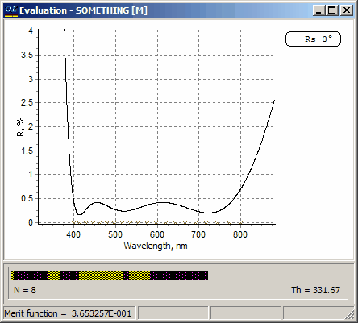
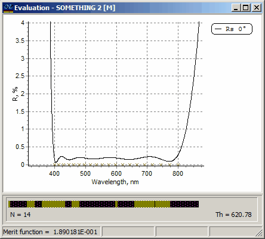
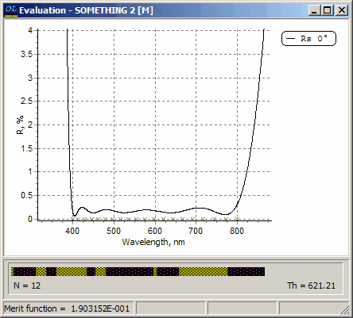

Exercise 11. Needle Optimization - design of AR Coating
Exercise 11. Needle Optimization - design of AR Coating
OptiLayer exploits the needle optimization technique in its genuine form. This technique is based on complicated mathematical ideas and computational algorithms. You can refer to the book “Basics of Optics of Multilayer Systems” by Sh.Furman and A.Tikhonravov for its foundations (See www.optilayer.com).
From a heuristic point of view, the needle optimization is described as a process of inserting thin new layers inside a multilayer stack. After the insertion of each new layer, the number of layers in the stack is generally increased by two, i.e., a single layer has been divided into two pieces separated by a “new” thin layer which was inserted in it. The resulting stack is then refined by one of the available optimization algorithms.
There are two operational modes for the Needle Optimization procedure:
1.Manual Needle Optimization mode which allows the user to control all steps of the needle optimization procedure.
2.Needle Optimization AUTO mode which combines insertions of the needle layers and refinement cycles in an integrated process.
The AUTO mode provides an access to a fully automated process which continues consecutive needle insertions and refinement steps until an optimal design is obtained, i.e., a design in which the insertion of new layers no longer results in a decreasing merit function. It is suggested that initial use be constrained to the AUTO mode. The “Needle optimization” mode will most often be used in situations where the user has developed specific strategies for complicated synthesis problems.
The files required for the Exercise 11 are located in the Problem directory EX11. In SF Mode you need to use Import Problem Directory command (File Menu).
Load GLASS substrate, SIO2 and TIO2 layer materials, and Ar-vis target. Target has 20 logarithmically distributed spectral points in the range from 400 to 800 nm. All files are the same as in the Exercise 10.
We shall use a file SOMETHING as a “starting design.” This file defines a 2-layer coating with layer physical thicknesses equal to 200nm, H material of the first layer and L material of the second layer.
Open the Evaluation window and set the range of the y-axis to be from 0 to 4%. This will allow monitoring the changes of the reflectance curve in more detail.
Choose the Newton method (Analysis and Synthesis Options dialog) and start the Needle Optimization AUTO procedure (Synthesis menu). The convergence of the process is fast at modern computers, and very quickly you will obtain the following 8 layer AR coating:

The choice of a starting design is not critical for the needle optimization procedure. This means that you will always get high quality results. Nevertheless with another “starting design” you may obtain a different solution. Load the file SOMETHING 2 from the Design database and repeat the Needle Optimization AUTO procedure. You will get a 14-layer AR coating with the merit function value of 0.1890181E-001.
The new design has the merit function value which is nearly two times less than in the previous case. At the same time the new design is thicker and has more design layers. The ability to easily obtain a set of designs with different combinations of major design parameters is one of the most attractive features of the needle optimization procedure. This ability provides the designer with an additional flexibility in choosing most practical design.

As a last part of the Exercise 11 note that the layer number 12 of the last 14-layer design is quite thin (you can examine this layer using the Modify Design command in the Synthesis menu). It is often desirable to remove such layers from the final design. You can do this with the help of Thin Layer Removal option. Go to this option in the Synthesis menu and remove the layer number 12. Confirm the prompt for the refinement procedure. You will get a new 12-layer design with the merit function value of 0.1903152 which differs very little from the previous value.
